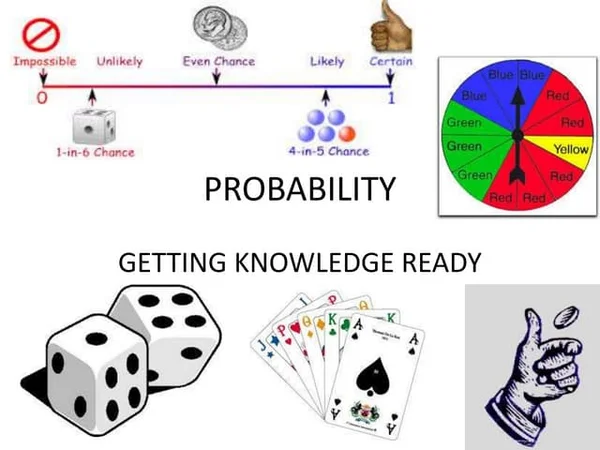
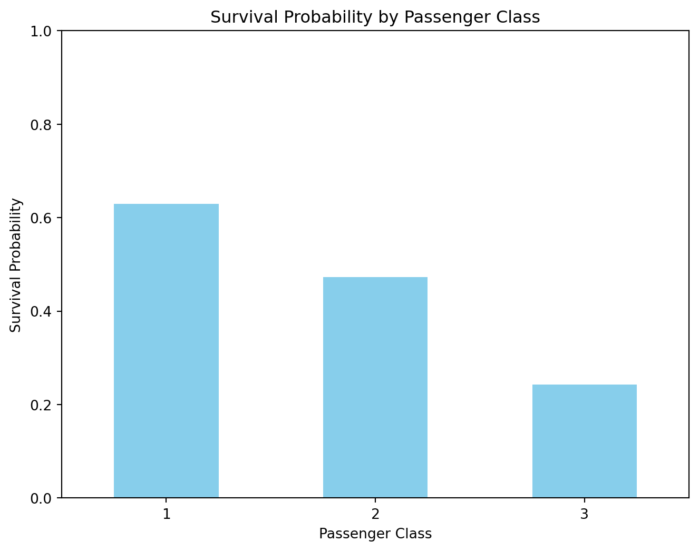
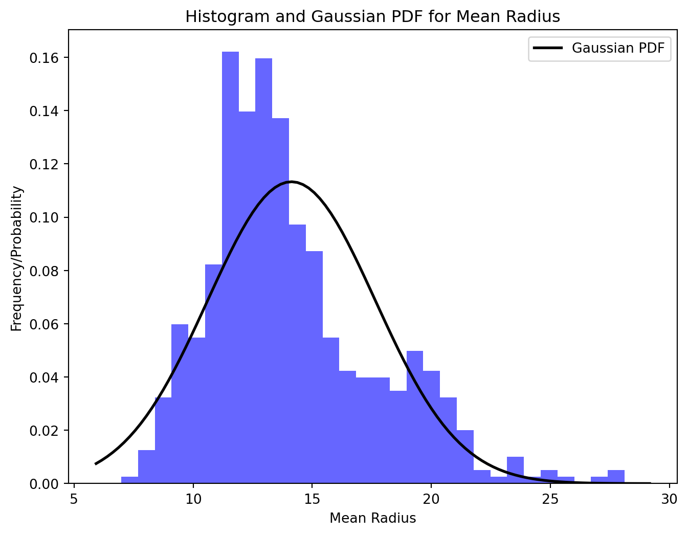
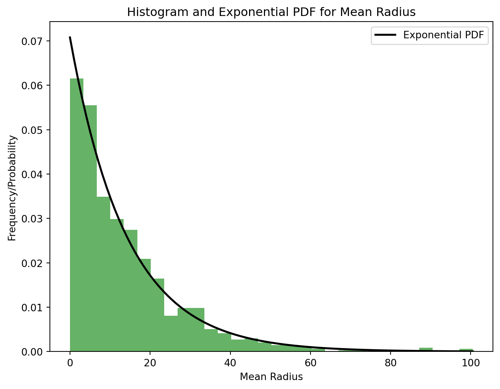
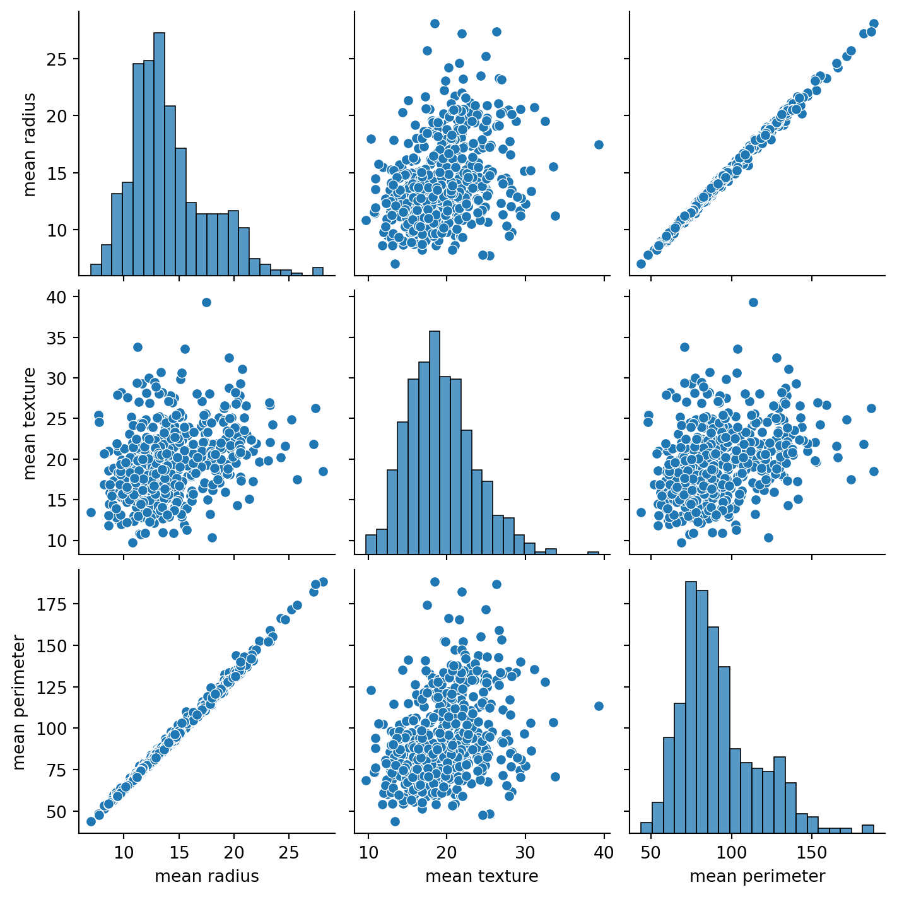
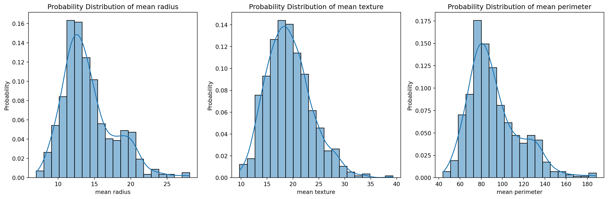

Probability in Machine Learning enables the quantification of uncertainty, allowing algorithms to make informed decisions by assessing the likelihood of various outcomes or events occurring based on available data.
python
code
analysis
Author
Tahmina Sultana
Published
November 22, 2023

Contents:
Introduction to Random Variables.
Different types of Random Variables.
Introduction to Probability and Probability Distribution.
Different types of probability distribution.
Example of discrete probability distribution with Titanic data.
Example of contunious probability distribution with Breast Cancer dataset.
Load the breast cancer dataset.
Explore the dataset, perform basic analysis, and visualize the data.
Perform Gaussian and Exponential distribution.
Create probability distribution graphs for some features.
Random Variable
A random variable serves as a mathematical link between various numerical values and the outcomes of an experiment. It assigns distinct values to different results of the experiment, making it variable. As each outcome holds an element of uncertainty, the variable is considered random.
In probability, a common representation for a random variable is using a capital letter (e.g., X), and a specific value is denoted by a corresponding lowercase letter (e.g., x). For instance, when flipping a coin twice, the potential outcomes form the sample space:
S = {HH, HT, TH, TT}
From this sample space, the random variable X can be defined as:
X = {HH, HT, TH, TT}
Random variables are categorized into two types: continuous and discrete random variables.
Discrete random variables are limited to specific, whole-number values and do not include fractions or decimals. They generate discrete probability distributions.
Examples include the total outcome of rolling two dice (ranging from 2 to 12) or the count of desktops sold (starting from 0 and increasing by whole numbers).
In application, discrete random variables describe distinct quantities, such as the number of aircraft taking off and landing at an airport at a given time or the specific count of communication lines activated in an organization’s system.
On the other hand, continuous random variables encompass a broad range of values, including decimals and fractions. They give rise to continuous probability distributions.
Examples of continuous random variables involve quantities like interest rates (such as 4.55% or 7.9%) or durations like task completion times.
In practical scenarios, continuous random variables are employed to represent measurements like reaction temperature errors or the probability of a construction project completing within a specific timeframe, such as between 20 and 24 months with a probability of 0.5.
Probability
Probability quantifies the likelihood of an event occurring, expressed as percentages or descriptive terms like “impossible” or “probable.” It encompasses the chances of various outcomes, such as rolling a specific number on a die. For instance, the probability of rolling a “4” on a six-sided die is 1 out of 6, considering there’s only one favorable outcome among six possibilities.
Why Probability?
In the realm of machine learning, uncertainty and stochastic elements often emerge due to incomplete observability, leading us to work primarily with sampled data.
Consider a scenario where we aim to make reliable inferences about the behavior of a random variable, despite having access only to limited data, leaving the entire population characteristics unknown.
Therefore, we require a method to extrapolate from the sampled data to represent the entire population or, in simpler terms, estimate the true process generating the data. Understanding the probability distribution becomes crucial as it allows us to gauge the likelihood of specific outcomes while accommodating the variability observed in the results. This comprehension enables us to extend conclusions from the sample to the broader population, approximate the function generating the data, and enhance the accuracy of predicting the behavior of a random variable.
Discrete Probability Distribution
Discrete probability distributions stem from discrete data and aim to model predictions or outcomes, such as pricing options or forecasting market shocks. These distributions illustrate the possible values of a discrete random variable along with their corresponding probabilities. Examples include the Bernoulli, geometric, and binomial distributions. Here are some common examples of discrete probability distributions:
Bernoulli Distribution: Models a single trial with two outcomes, often used in success/failure experiments.
Binomial Distribution: Describes the number of successes in a fixed number of independent trials with a constant probability of success.
Poisson Distribution: Models the number of events occurring in a fixed interval of time or space, given a known average rate of occurrence.
Continuous Probability Distribution
In contrast, continuous probability distributions cover an infinite range of values, making them uncountable, like time extending from 0 seconds indefinitely. Examples involve continuous measurements like annual rainfall in a city or the weight of newborn babies, where the range of values is limitless and not countable in a finite manner. Here are some common examples of continuous probability distributions:
Normal (Gaussian) Distribution: Symmetric bell-shaped curve that describes many natural phenomena like heights or test scores.
Uniform Distribution: All values in an interval have equal probability, forming a rectangle in the probability density function.
Exponential Distribution: Models the time between events in a Poisson process, such as the time between phone calls at a call center.
Example of discrete probability distribution
import pandas as pdimport seaborn as snsimport matplotlib.pyplot as plt# Load the Titanic datasettitanic_data = sns.load_dataset('titanic')# Filter data for relevant columns (class and survival)survival_data = titanic_data[['pclass', 'survived']]# Calculate survival probabilities based on passenger classsurvival_probabilities = survival_data.groupby('pclass')['survived'].mean()# Plotting the probability distributionplt.figure(figsize=(8, 6))survival_probabilities.plot(kind='bar', color='skyblue')plt.title('Survival Probability by Passenger Class')plt.xlabel('Passenger Class')plt.ylabel('Survival Probability')plt.xticks(rotation=0)plt.ylim(0, 1) # Setting y-axis limits to probability range (0 to 1)plt.show()

Example of continuous probability distribution
import numpy as npimport matplotlib.pyplot as pltfrom sklearn.datasets import load_breast_cancerfrom scipy.stats import norm, expon# Load breast cancer datasetdata = load_breast_cancer()X = data.datay = data.target# Consider a specific feature for demonstration (e.g., mean radius)feature_index =0selected_feature = X[:, feature_index]# Summary statistics and visualizationmean_value = np.mean(selected_feature)std_dev = np.std(selected_feature)print(f"Mean: {mean_value}, Standard Deviation: {std_dev}")# Plotting the histogram of the selected featureplt.figure(figsize=(8, 6))plt.hist(selected_feature, bins=30, density=True, alpha=0.6, color='blue')# Plot Gaussian distribution based on the observed mean and standard deviationxmin, xmax = plt.xlim()x = np.linspace(xmin, xmax, 100)p = norm.pdf(x, mean_value, std_dev)plt.plot(x, p, 'k', linewidth=2, label='Gaussian PDF')plt.title('Histogram and Gaussian PDF for Mean Radius')plt.xlabel('Mean Radius')plt.ylabel('Frequency/Probability')plt.legend()plt.show()# Plotting an exponential distributionplt.figure(figsize=(8, 6))# Generate random data following an exponential distribution with the observed meanexponential_data = np.random.exponential(scale=mean_value, size=1000)# Plot histogramplt.hist(exponential_data, bins=30, density=True, alpha=0.6, color='green')# Plot exponential distribution PDFx_exp = np.linspace(0, np.max(exponential_data), 100)p_exp = expon.pdf(x_exp, scale=mean_value)plt.plot(x_exp, p_exp, 'k', linewidth=2, label='Exponential PDF')plt.title('Histogram and Exponential PDF for Mean Radius')plt.xlabel('Mean Radius')plt.ylabel('Frequency/Probability')plt.legend()plt.show()
Mean: 14.127291739894552, Standard Deviation: 3.520950760711062


import numpy as npimport pandas as pdimport matplotlib.pyplot as pltimport seaborn as snsfrom sklearn.datasets import load_breast_cancer# Load the breast cancer datasetdata = load_breast_cancer()df = pd.DataFrame(data.data, columns=data.feature_names)# Select a few features for analysis (e.g., mean radius, mean texture, mean perimeter)selected_features = ['mean radius', 'mean texture', 'mean perimeter']# Descriptive statisticsprint(df[selected_features].describe())# Visualize the data using pair plotssns.pairplot(df[selected_features])plt.show()# Create probability distribution plots for selected featuresplt.figure(figsize=(15, 5))for i, feature inenumerate(selected_features, 1): plt.subplot(1, 3, i) sns.histplot(df[feature], kde=True, stat="probability", bins=20) plt.title(f'Probability Distribution of {feature}') plt.xlabel(feature) plt.ylabel('Probability')plt.tight_layout()plt.show()
mean radius mean texture mean perimeter
count 569.000000 569.000000 569.000000
mean 14.127292 19.289649 91.969033
std 3.524049 4.301036 24.298981
min 6.981000 9.710000 43.790000
25% 11.700000 16.170000 75.170000
50% 13.370000 18.840000 86.240000
75% 15.780000 21.800000 104.100000
max 28.110000 39.280000 188.500000


Source Code
---title: "Probability and Random Variables"author: "Tahmina Sultana"date: "2023-11-22"categories: [python, code, analysis]image: "cluster.gif"jupyter: python3description: "Probability in Machine Learning enables the quantification of uncertainty, allowing algorithms to make informed decisions by assessing the likelihood of various outcomes or events occurring based on available data."---**Contents:**- Introduction to Random Variables.- Different types of Random Variables.- Introduction to Probability and Probability Distribution.- Different types of probability distribution.- Example of discrete probability distribution with **Titanic data.**- Example of contunious probability distribution with **Breast Cancer dataset.** - Load the breast cancer dataset. - Explore the dataset, perform basic analysis, and visualize the data. - Perform Gaussian and Exponential distribution. - Create probability distribution graphs for some features.## **Random Variable**A random variable serves as a mathematical link between various numerical values and the outcomes of an experiment. It assigns distinct values to different results of the experiment, making it variable. As each outcome holds an element of uncertainty, the variable is considered random.In probability, a common representation for a random variable is using a capital letter (e.g., X), and a specific value is denoted by a corresponding lowercase letter (e.g., x). For instance, when flipping a coin twice, the potential outcomes form the sample space:S = {HH, HT, TH, TT}From this sample space, the random variable X can be defined as:X = {HH, HT, TH, TT}Random variables are categorized into two types: continuous and discrete random variables.**Discrete random variables** are limited to specific, whole-number values and do not include fractions or decimals. They generate discrete probability distributions.**Examples** include the total outcome of rolling two dice (ranging from 2 to 12) or the count of desktops sold (starting from 0 and increasing by whole numbers).In application, discrete random variables describe distinct quantities, such as the number of aircraft taking off and landing at an airport at a given time or the specific count of communication lines activated in an organization's system.On the other hand, **continuous random variables** encompass a broad range of values, including decimals and fractions. They give rise to continuous probability distributions.**Examples** of continuous random variables involve quantities like interest rates (such as 4.55% or 7.9%) or durations like task completion times.In practical scenarios, continuous random variables are employed to represent measurements like reaction temperature errors or the probability of a construction project completing within a specific timeframe, such as between 20 and 24 months with a probability of 0.5.## ProbabilityProbability quantifies the likelihood of an event occurring, expressed as percentages or descriptive terms like "impossible" or "probable." It encompasses the chances of various outcomes, such as rolling a specific number on a die. For instance, the probability of rolling a "4" on a six-sided die is 1 out of 6, considering there's only one favorable outcome among six possibilities.## Why Probability?In the realm of machine learning, uncertainty and stochastic elements often emerge due to incomplete observability, leading us to work primarily with sampled data.Consider a scenario where we aim to make reliable inferences about the behavior of a random variable, despite having access only to limited data, leaving the entire population characteristics unknown.Therefore, we require a method to extrapolate from the sampled data to represent the entire population or, in simpler terms, estimate the true process generating the data. Understanding the probability distribution becomes crucial as it allows us to gauge the likelihood of specific outcomes while accommodating the variability observed in the results. This comprehension enables us to extend conclusions from the sample to the broader population, approximate the function generating the data, and enhance the accuracy of predicting the behavior of a random variable.### Discrete Probability DistributionDiscrete probability distributions stem from discrete data and aim to model predictions or outcomes, such as pricing options or forecasting market shocks. These distributions illustrate the possible values of a discrete random variable along with their corresponding probabilities. Examples include the Bernoulli, geometric, and binomial distributions. Here are some common examples of discrete probability distributions:1. **Bernoulli Distribution:** Models a single trial with two outcomes, often used in success/failure experiments.2. **Binomial Distribution:** Describes the number of successes in a fixed number of independent trials with a constant probability of success.3. **Poisson Distribution:** Models the number of events occurring in a fixed interval of time or space, given a known average rate of occurrence.### Continuous Probability DistributionIn contrast, continuous probability distributions cover an infinite range of values, making them uncountable, like time extending from 0 seconds indefinitely. Examples involve continuous measurements like annual rainfall in a city or the weight of newborn babies, where the range of values is limitless and not countable in a finite manner. Here are some common examples of continuous probability distributions:1. **Normal (Gaussian) Distribution:** Symmetric bell-shaped curve that describes many natural phenomena like heights or test scores.2. **Uniform Distribution:** All values in an interval have equal probability, forming a rectangle in the probability density function.3. **Exponential Distribution:** Models the time between events in a Poisson process, such as the time between phone calls at a call center.#### Example of discrete probability distribution```{python}import pandas as pdimport seaborn as snsimport matplotlib.pyplot as plt# Load the Titanic datasettitanic_data = sns.load_dataset('titanic')# Filter data for relevant columns (class and survival)survival_data = titanic_data[['pclass', 'survived']]# Calculate survival probabilities based on passenger classsurvival_probabilities = survival_data.groupby('pclass')['survived'].mean()# Plotting the probability distributionplt.figure(figsize=(8, 6))survival_probabilities.plot(kind='bar', color='skyblue')plt.title('Survival Probability by Passenger Class')plt.xlabel('Passenger Class')plt.ylabel('Survival Probability')plt.xticks(rotation=0)plt.ylim(0, 1) # Setting y-axis limits to probability range (0 to 1)plt.show()```#### Example of continuous probability distribution```{python}import numpy as npimport matplotlib.pyplot as pltfrom sklearn.datasets import load_breast_cancerfrom scipy.stats import norm, expon# Load breast cancer datasetdata = load_breast_cancer()X = data.datay = data.target# Consider a specific feature for demonstration (e.g., mean radius)feature_index =0selected_feature = X[:, feature_index]# Summary statistics and visualizationmean_value = np.mean(selected_feature)std_dev = np.std(selected_feature)print(f"Mean: {mean_value}, Standard Deviation: {std_dev}")# Plotting the histogram of the selected featureplt.figure(figsize=(8, 6))plt.hist(selected_feature, bins=30, density=True, alpha=0.6, color='blue')# Plot Gaussian distribution based on the observed mean and standard deviationxmin, xmax = plt.xlim()x = np.linspace(xmin, xmax, 100)p = norm.pdf(x, mean_value, std_dev)plt.plot(x, p, 'k', linewidth=2, label='Gaussian PDF')plt.title('Histogram and Gaussian PDF for Mean Radius')plt.xlabel('Mean Radius')plt.ylabel('Frequency/Probability')plt.legend()plt.show()# Plotting an exponential distributionplt.figure(figsize=(8, 6))# Generate random data following an exponential distribution with the observed meanexponential_data = np.random.exponential(scale=mean_value, size=1000)# Plot histogramplt.hist(exponential_data, bins=30, density=True, alpha=0.6, color='green')# Plot exponential distribution PDFx_exp = np.linspace(0, np.max(exponential_data), 100)p_exp = expon.pdf(x_exp, scale=mean_value)plt.plot(x_exp, p_exp, 'k', linewidth=2, label='Exponential PDF')plt.title('Histogram and Exponential PDF for Mean Radius')plt.xlabel('Mean Radius')plt.ylabel('Frequency/Probability')plt.legend()plt.show()``````{python}import numpy as npimport pandas as pdimport matplotlib.pyplot as pltimport seaborn as snsfrom sklearn.datasets import load_breast_cancer# Load the breast cancer datasetdata = load_breast_cancer()df = pd.DataFrame(data.data, columns=data.feature_names)# Select a few features for analysis (e.g., mean radius, mean texture, mean perimeter)selected_features = ['mean radius', 'mean texture', 'mean perimeter']# Descriptive statisticsprint(df[selected_features].describe())# Visualize the data using pair plotssns.pairplot(df[selected_features])plt.show()# Create probability distribution plots for selected featuresplt.figure(figsize=(15, 5))for i, feature inenumerate(selected_features, 1): plt.subplot(1, 3, i) sns.histplot(df[feature], kde=True, stat="probability", bins=20) plt.title(f'Probability Distribution of {feature}') plt.xlabel(feature) plt.ylabel('Probability')plt.tight_layout()plt.show()```